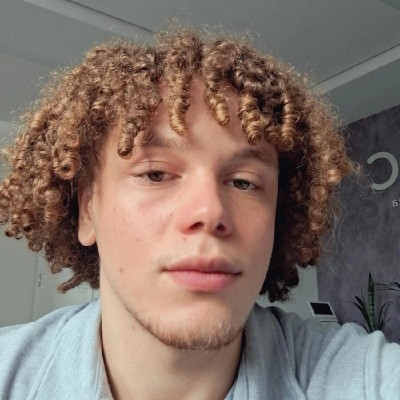

01 / TRABALHOS SELECIONADOSIdeias que
Ideias que
viraram projetos.
Um olhar sobre o que venho construindo.
Explore as telas, os detalhes e o código.

POR TRÁS DO CÓDIGO
Prazer, Renan.
Desenvolvedor FullStack. Este é meu espaço para compartilhar projetos, explorar ideias e mostrar o que acontece quando elas saem do papel.
Mais sobre meu trabalho no GitHub ↗